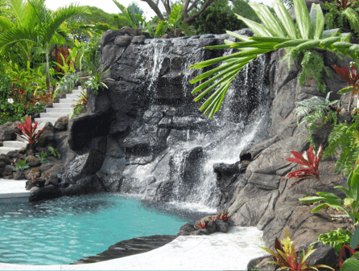

Why are we getting married in Hawaii?
Two reasons.
First, have you seen the
venue?! It not only has two hot tubs, it has two pools...connected by a waterfall! Why have
a "wedding reception" when we can have a double decker pool party?

Second, and slightly more
to the point, we spent a lot of time discussing what this wedding represented to us. Eventually,
one idea, with four components emerged. We wanted an event that celebrated:
Partnership in walking a shared
path, with
presence, in support of, and supported by, our
community.
But we didn't want to just talk about these themes, we wanted the wedding to
be these themes. A one-night, big-bang, wedding at a traditional venue wouldn't enable us
to be present with each other, or connect with you - the people that have meant the most in our
lives - in a way that was mutually supportive. So instead of a wedding day, we want this to be
a "wedding retreat." Of all the venues we looked at, in all the places around the world, the
one we discovered that could support the blend of both presence - and pool party - just happened
to be in beautiful Kona, HI :)
Will the wedding be a “meditation retreat”?
No. While mindfulness is an intention we will be setting, and one we invite you to participate in, how you choose to do that
is entirely up to you. In other words, please feel free to be “present”, however that feels most
comfortable to you. For those interested, there may be short, daily meditations, guided by one
of our favorite teachers, throughout the weekend. We’ll be there and we’d love to have you join,
but there’s no obligation. No experience required.
Will there be alcohol?
In the spirit of remaining present, we will not be participating in adult libations. That said, we invite you to celebrate
in a way that feels celebratory to you! While we will not be providing alcohol, you are welcome
to bring your own festive enjoyments. We simply ask that if you do enjoy enjoyments, that you
be intentional about respecting the spirit of mindfulness and presence of other folks. Also,
that you help us prevent “tipsy toasting.” :)
Are children invited?
Because our intention is for this celebration to be a time to reflect on mindfulness, presence, love and community, all ages
are welcome during our Adventure Day (Sunday), but we ask that Friday and Saturday events be
reserved for children aged 27 and up! If the above causes significant issues for your family,
please let us know.
Who else is going?
The Kona wedding is very small. Once you RSVP, you will be added to a Facebook group where you
can see who else is planning to attend. Here, you can arrange lodging, car rental sharing, and
adventure planning.
What if I/we can’t make it?
No worries at all. We know it’s a lot to ask to travel all the way out to Hawaii and because we know that not everyone can
make it to Kona, and because we aren’t able to invite everyone we’d like to celebrate with, we
hope to have a reception in California after the wedding. Just let us know as soon as possible
if you won’t be able to come - that will help us determine if and when to host a CA reception.
What is the agenda?
Preliminary Schedule of Events at the Homes Over Kona Property
- (Dec 7)
Friday afternoon:
- (Dec 7)
Friday evening:
- Love Symposium - art projects, TED-style talks, and hang out time
- Dinner will be provided
- (Dec 8)
Saturday morning:
- On your own for breakfast
- (Dec 8)
Saturday afternoon:
- (Dec 8)
Saturday evening:
- Wedding!
- Dinner will be provided
- (Dec 9)
Sunday:
- BYOBrunch & Beach
- Adventure day at the beach (or your own)
Where should I/we fly into?
The wedding will be on the Big Island of Hawaii, which has two major airports. The airport closest to the property is Kona
International Airport (KOA).
When should I/we arrive on the island?
Come any time! Beginning Friday during the day, you are welcome to join us on the property for pool time and informal shenanigans.
Formal activities will begin Friday evening.
Where should I/we stay?
Most of the wedding events will take place on the property, located about 15 minutes from Kona, Hawaii. Take your pick of
any of the
hotels,
Airbnbs, or
guest houses, around there.
Should I/we rent a car?
You'll definitely want access to a car. While Uber has recently made its way to the island, it's not clear at this point
how reliable it'll be. If you want to share a rental car with other folks, feel free to use the
Justiz Wedding facebook group to connect with other folks. And here's a handy list of all the
important places you'll want to make sure you can get to/from including:
What is there to do in Kona?
So much! Here are a few of the activities that are raved about by those who have been before:
Where are you registered?
We have the great fortune of needing very little. Your presence if the most important thing to us. If you would still like
to give, we would love your gift of participation in our Friday night event, the Simposio de
Amor (see below)!
What's up with the Friday night Symposium?
Before we marry the next day, we’d love to hear about what love and partnership means to you - our community. Whether through
artistic expression, a TED-style talk, a philosophical discussion, or something else entirely,
we want Friday night to serve as vehicle to reflect our collective wisdom on relationships, marriage
and a reminder of love’s role in our daily lives. We would be honored if you chose to contribute
to the evening in any way at all, large or small. It's your voice, and your wisdom, we want to
hear. :)